Windows7 64bit版
JDK8のダウンロード
Java SE Development Kit 8 Downloadsにアクセスする。
「Java SE DevelopmentKit8 Downloads」の下部にあるポップアップの
「Accept License Agreement 」をクリックする。
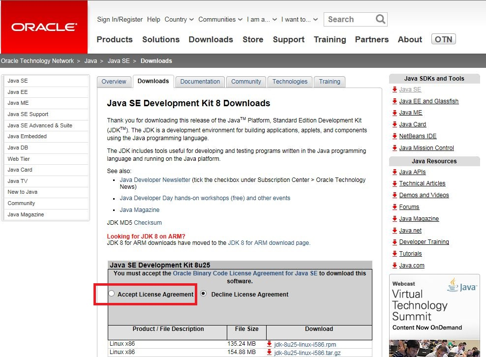
「Windows x64」の右側にあるリンクをクリックする。
※Windows 32bit版をご利用の場合は、「Windows x86」のリンク
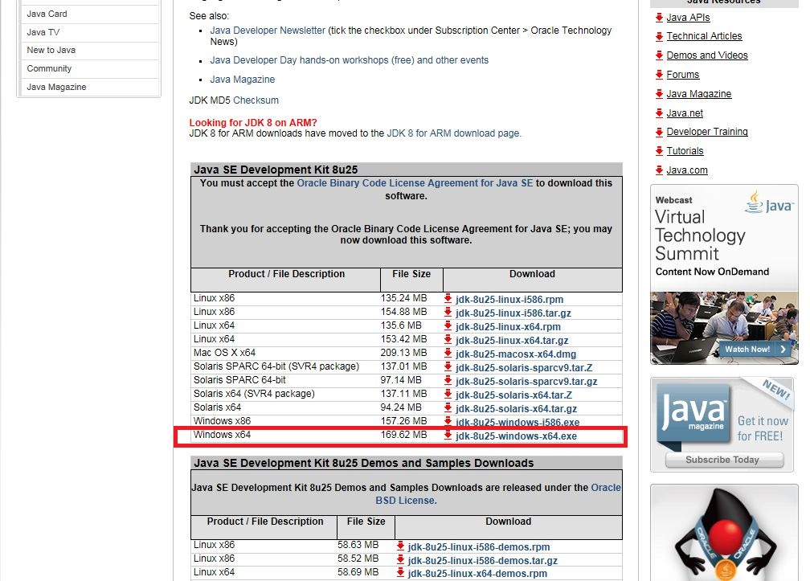
JDK8のインストール
ダウンロードしたファイルをダブルクリックすると、インストールが開始されます。
以下の画面が表示されますので、「次」ボタンをクリックする。
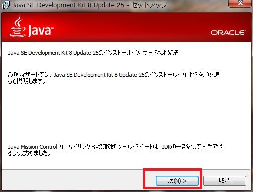
以下の画面にてインストールする機能を選択できます。
今回はデフォルトのままで問題無いので、「次」ボタンをクリックする。
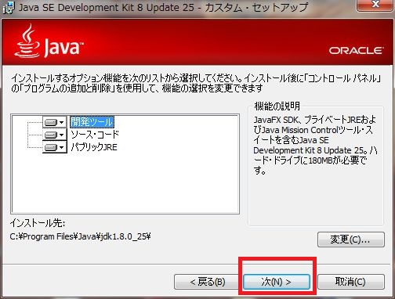
以下の画面にてインストール先を選択できます。
今回はデフォルトのままで問題無いので、「次」ボタンをクリックする。
※インストール先に日本語名称が含まれていると、
何かと問題を起こしやすいので避けた方が良いです。
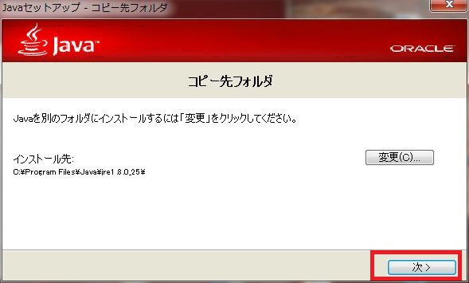
インストールが完了すると以下の画面が表示されるので、「閉じる」ボタンをクリックする。
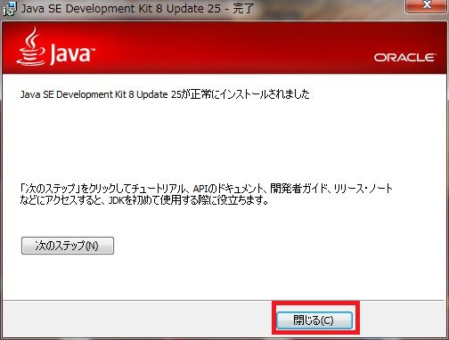
環境変数の設定
インストールしたJDK8をWindowsで認識できるようにする設定です。
1.環境変数の設定画面を表示する。
「Windows(ロゴ)」キー + 「Pause/Breake」キーを同時押し。
画面左端の「システムの詳細設定」をクリックする。
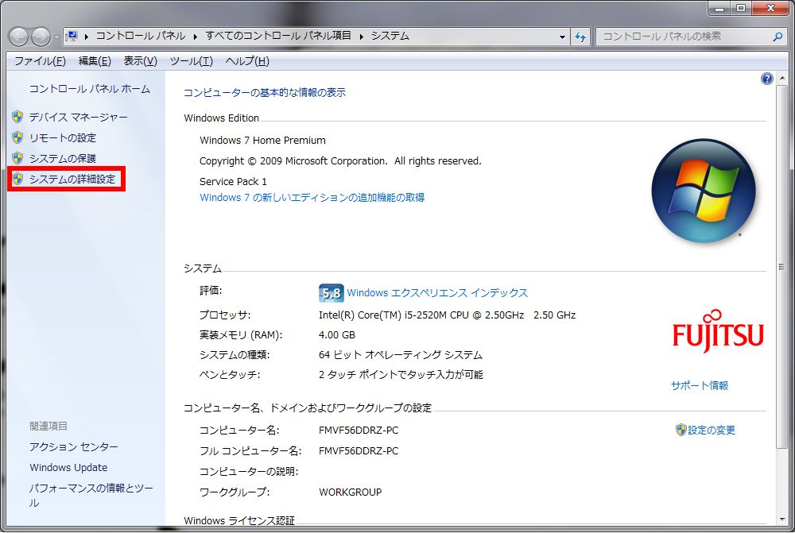
「環境変数」ボタンをクリックする。
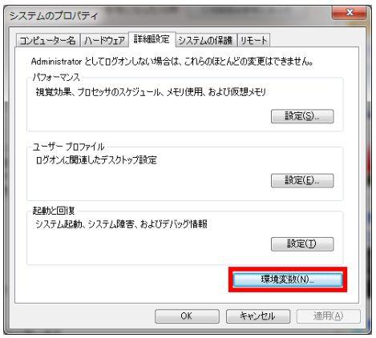
2.「システム環境変数」の「Path」を選択して「編集」ボタンをクリックする。
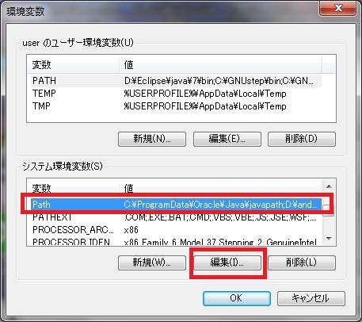
3.Pathの変更画面が表示されるので、既存値の先頭に
「C:\Program Files\Java\jdk1.8.0_25\bin;」を追加して
「OK」ボタンをクリックする。
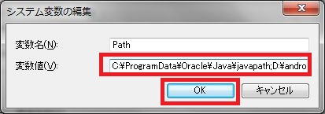
4.「システム環境変数」の「JAVA_HOME」を選択して「編集」ボタンをクリックする。
「JAVA_HOME」が存在しない場合は「新規」ボタンをクリックする。
変数名に「JAVA_HOME」と入力する。
※以降の作業は項番5と同じ
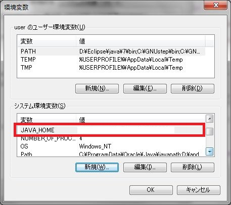
5.JAVA_HOMEの変更画面が表示されるので、既存値の先頭に
「C:\Program Files\Java\jdk1.8.0_25;」を追加して
「OK」ボタンをクリックする。
※画像は項番4で「新規」を選択した際のものです。
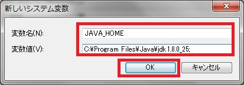